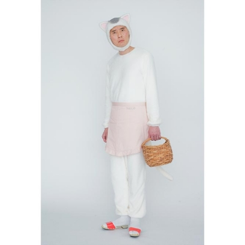

そのきもち わかるで！な梅吉 [梅吉]

あんまり居心地よさそうに見えないのにおっとのお膝が好きな梅吉。

おっとがじっとしていると良いのですが

席を立とうとしたりなでなでし始めると変なスイッチが入ります(⌒-⌒;
（15秒 音出ません）
その始まりはこんな感じー！
もちろんジャレてるだけですwww
（10秒 音出ません）
おひざべっどは うごいたらあかん！とお怒りになる猫、に共感する猫、
をじっと見る猫w
今日は手抜き記事ゆえ押し逃げ推奨です(≧▽≦)
コメントお気遣いなくー。
三連休最後の日（お仕事の方はお疲れ様ですm(_ _)m）。
みなさまもごゆるりとお過ごしくださいませ。
皆様ご存知「きょうの猫村さん」が実写版でテレビドラマ化されます。
猫村さんを演じるのは

（画像は公式HPよりお借りしました）
「孤独のグルメ」の松重豊さん(*>艸<)
松重さん衝撃の猫村さんルックwwwww
これは録画してみようと思ってまーす！
公式サイトはこちらです。
猫村さん、以前はweb版で見てました。
整形好きの犬神家の奥様に芝居掛かったセリフで言いよる年下の男性現る！（爆）
あたりまでは読んでいたのですが以降ちょっと遠ざかってました。
現在は連載お休み中で更新はされてないのですがweb版の無料公開はしています。
まだ読んでない分がかなりあるので遡って読んでみようっと♪
web版、リンクを貼ってみたのですがうまく飛びませんでしたw
「猫村. jp」で検索すると出て来るので気になる方は是非＾＾

カフェオレ色の梅吉

梅吉 2023年8月10日 永眠


梅吉と出会った譲渡会

犬猫の理由なき殺処分ゼロ
妄想広告
UMEKICHI 光

爆発的に早い！
時々攻撃的！
Thanks to Mr.Boss365
爆発的に早い！
時々攻撃的！
Thanks to Mr.Boss365

梅吉さん自分の動画を見るんですねー。
そりゃ共感はするでしょう。自分だもの!?
by zombiekong (2020-02-24 00:09)
この距離でなでなで禁止とはつらい・・・
イスは手を出さないぞ！ということかも知れませんね(・_・;)
松重豊さんのキャラ(笑)
「孤独のグルメ」との振り幅ありすぎです！
by yamatonosuke (2020-02-24 01:07)
冬は膝の上は暖かくていいよニャ。
松重豊さん、こんな仕事もやってるんだ（ﾟ□ﾟ）
by 英ちゃん (2020-02-24 01:35)
梅吉さん、画面越しの梅吉さんを見ていますね^^
by ニコニコファイト (2020-02-24 07:02)
梅吉さん自分だと判って見ているのでしょうか？？
反抗しても甘噛みですね。
by ma2ma2 (2020-02-24 09:52)
梅吉さん、真剣に観ていますね。
大きなお膝の上は快適に違いない！（笑）
猫村さんはスケジュールに入れて、今からWebに行ってみるつもりですm(_ _)m
by kiki (2020-02-24 10:53)
猫ベッドの分際でごそごそ動くとは何事にゃ！ですよね！！
おとーさんの腕に埋まってる梅吉さんの幸せなお顔、いつまでも見ていたいです♪
梅吉さんはカミカミが優しい～^^
ウチのも子猫の頃は動くと噛んで蹴り倒されましたが、さすがに大人になったのか最近は「使えないヤツにゃ・・」とため息ついてまた寝る感じです。
昨日も東芝VS神戸製鋼はテレビ観戦。
車のない我が家、お出かけには公共交通機関を利用しないわけにいかず、当面はお籠もりを決めました^^
混雑緩和に協力です(≧▽≦)
猫村さんの実写版？！あ、ちゃんとしっぽついてる！これは楽しみです！！
by ゆきち (2020-02-24 11:52)
梅吉さんってば・・・ご自身の映っている動画を堪能♪
猫は自分を客観視できるのか？に関する疑問が沸々と。
うちの熟女たちは鏡に映った自分の姿に無関心です。
自分らの動画にも鳴き声にやや耳が反応するもリアクションはすこぶる薄め。
猫村さんって・・・男性だったんだｗ
漫画はWEBで時々見ていました。日々家事をこなすんですよね(;^_^A
実写版が出るとは別の意味で衝撃です♪
by marimo (2020-02-24 12:27)
こんにちは。
梅吉くん、リラックスの脱力感が良い感じです。
「変なスイッチ」は戯れてる感じ？甘噛みして欲しいですね。
梅吉くん、モニター画面を眼視？自己分析しているみたいです。
「あの場面は、噛まないといけないなー？」みたいな感じ（笑）です。
「きょうの猫村さん」初耳？知らなかったです。面白そうですね。
無料公開のweb版をチャックしてみます！？(=^･ｪ･^=)
PS.歌詞カードチェックはしていませんが、ちぃさん「猫バカ認定」です（笑）
by Boss365 (2020-02-24 13:44)
そうそう、BEDは動いてはダメですw
気持ちよく寝るには、どのタイミングで教育的指導をするのか
モニターでチェックですね( ^ω^ )
うちのかみさんはよくニャンコの枕になってますが
大体は抱え込まれてるのでなかなか動けないでそうですw
by ニッキー (2020-02-24 15:08)
ベッドは動くな（笑
手枕は必需品♪
って自分の動画をじっくり見てますね♪
by きぃ (2020-02-24 15:58)
あら、こちらも手抜き記事(笑)
と言いつつ、全然手抜きじゃないじゃないですかー。
私こそ手抜きだわ～。
梅吉さん、お膝ベッドは動かないでのんびりしたいのかな。
by ChatBleu (2020-02-24 16:43)
梅吉さん、そりゃ動いたら噛むに決まってるやんけ！と共感してるー？
うちは撫でられるの好きすぎて、噛まなかった^^
動画は撮ったことないから、わかりません～。
鏡は自分だと認識してましたね、大人になると^^
by sana (2020-02-24 18:28)
梅吉ちゃんあまがみモードですが
目がかたまってますね～
なにを考えていることやら・・・
猫村さんテレビドラマ化・・・まじですかー
イメージがわかなーい((+_+))
by ぱだおくん (2020-02-24 19:52)
画面越しの梅吉さんを自分だと認識してるんでしょうか(^_^;)
快適な気持ち、良～く分かります(^_^)
by kou (2020-02-24 20:56)
あぐあぐする梅吉さん、本気ではないのでじゃれているのですね。
動画を見て演技をチェックする梅吉さん、役者でんな～♪ ^^;
by yes_hama (2020-02-24 21:47)
確かに写真と動画をみた感じでは
一見気持ちよさそうという雰囲気とは
微妙に違って見えます^m^
きょうの猫村さん、まさか実写化するとは
思っていませんでした。
さすがテレ東！
by ふにゃいの (2020-02-24 22:28)
猫村さん、途中までは買って読んでました。ネコムライスが
食べたい。
by mio (2020-02-24 23:51)
「きょうの猫村さん」恥ずかしながら知りませんでした。
そんなに人気の漫画だったのですね。
で、それが実写化？？？？う～む、録画してみますぅ！
by よーちゃん (2020-02-25 07:14)
猫村さんが男性…。違和感ありつつも楽しみです。
by liang (2020-02-25 12:32)
1枚目の写真の顔がいいなあ〜〜〜
もしかしてだんなさまが着ているフリースは
わたしとおそろいの、例のやつでしょうか！(笑)
最近見かけないとおもって探したら、押し入れの奥で潰れていたので
洗濯しました(笑)
「きょうの猫村さん」の実写化、昨日のセミナーイベントでも友達が話してましたよぉ。
松重さんがやるとは！^^
by リュカ (2020-02-25 15:02)
猫村さん実写化って、こういうアナログでチープな扮装で演られるのでやすね。
凝ったCG使うより、ずっと好感持てやす。
by ぼんぼちぼちぼち (2020-02-25 16:11)
らいむを膝に乗せて撫でたくておやつで誘導したんですけど
失敗に終わったばかりです
お膝ベッドは動いたらあかん！
勉強になりました
by 藤並 香衣 (2020-02-26 00:51)